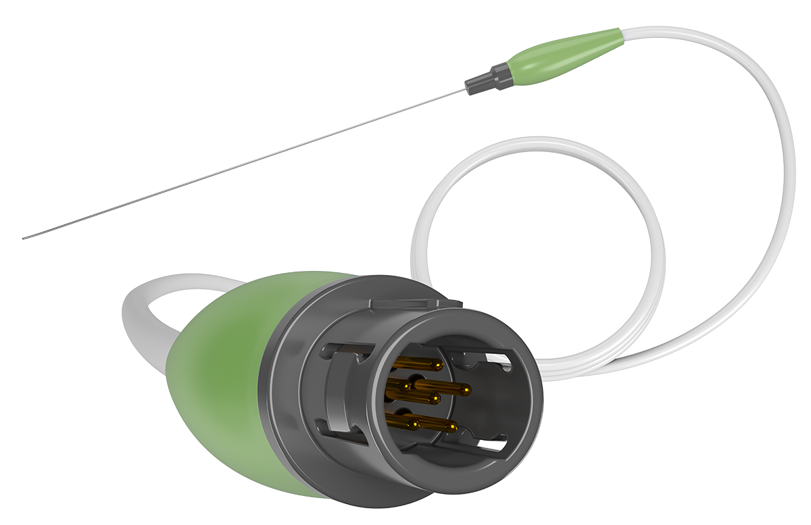
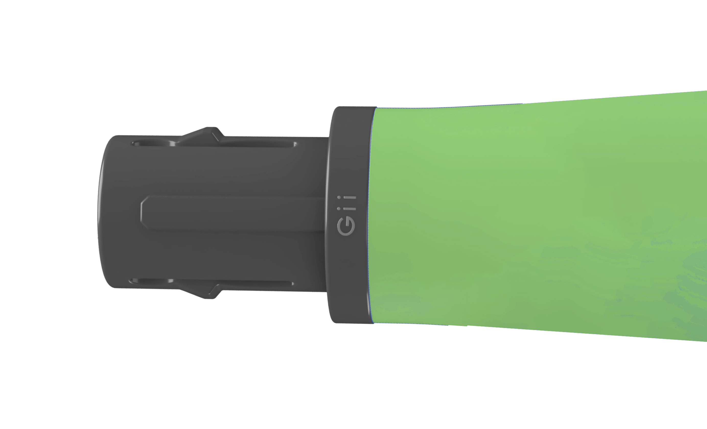

WHITE PAPER
Streamlining medical device development through optimized designs, cost reduction, and collaborative manufacturing solutions.
Executive Summary
In the competitive medical device manufacturing industry, companies are under constant pressure to balance cost, quality, and innovation. One effective approach to achieve this balance is Value Engineering (VE). By optimizing product design, materials, and manufacturing processes, VE helps manufacturers reduce costs, improve quality, and accelerate time-to-market, all while maintaining regulatory compliance.
This white paper explains how value engineering can be applied to
medical device contract manufacturing and the significant business
outcomes it can generate, including cost savings,
improved product performance, and
enhanced competitiveness.

Introduction
Medical device manufacturers must balance profitability, regulatory hurdles, and varying market demands. Value Engineering (VE) offers a structured method to improve a product’s value. VE encourages manufacturers to rethink product designs, production processes, and material choices to create cost-effective solutions that still meet high industry standards.
The application of VE in contract manufacturing specifically targets operational efficiency and cost-effectiveness, helping manufacturers stay competitive and meet both customer and regulatory expectations. improved product performance, and enhanced competitiveness.
What is Value Engineering?
Value Engineering (VE) is a systematic approach to enhancing product value by improving functionality and reducing costs. It involves analyzing each aspect of the product lifecycle—from design to production—to identify potential areas for cost savings. The goal is to maintain or improve the product’s quality and performance while lowering manufacturing expenses.
Applying Value Engineering to Medical Device Manufacturing
In medical device contract manufacturing, VE is used to optimize several key areas:
1. Design Optimization
VE identifies ways to simplify designs, reduce parts, and improve assembly efficiency, all of which lower production costs without compromising product functionality.
2. Material Selection
VE explores alternative materials that offer the same or better performance at a lower cost, such as replacing expensive metals with advanced polymers.
3. Process Improvement
Streamlining manufacturing processes, introducing automation, or applying lean manufacturing principles can reduce time, labor, and material costs.
4. Supplier Collaboration
Working closely with suppliers early in the design phase helps identify cost-effective materials and manufacturing solutions, driving down costs across the entire supply chain.
5. Regulatory Compliance
VE ensures that cost-saving measures align with regulatory requirements, making the product easier and faster to test, validate, and certify.
Business Outcomes of Value Engineering
When properly applied, VE can generate substantial benefits for medical device manufacturers:
1. Innovation and Competitive Advantage
VE encourages manufacturers to rethink traditional design and manufacturing methods. This fosters innovation, enabling companies to create differentiated products with enhanced functionality at lower costs, providing a competitive edge.
2. Cost Reduction
By optimizing designs, materials, and processes, VE helps reduce the cost of goods sold (COGS). These savings can be passed on to customers, enabling manufacturers to offer competitive pricing while maintaining profit margins.
3. Improved Product Quality
VE doesn’t just reduce costs—it improves product quality. Streamlined designs and better materials lead to products that are more reliable, durable, and easier to use, ultimately enhancing customer satisfaction.
4. Faster Time-to-Market
VE can significantly shorten development cycles by identifying inefficiencies early in the design process. This leads to faster prototyping, testing, and production, allowing manufacturers to bring products to market more quickly.
5. Regulatory Compliance
VE ensures that cost-reduction efforts don’t undermine regulatory compliance. It results in designs that are easier to test, validate, and certify, reducing the risk of delays in getting products to market.
6. Stronger Supplier Relationships
VE improves collaboration with suppliers, leading to better pricing, faster delivery, and more reliable components. Early supplier involvement ensures cost-effective solutions that maintain quality standards.
7. Sustainability
VE promotes sustainable practices by reducing material waste, optimizing energy use, and improving product durability, all of which contribute to long-term sustainability goals and cost savings.

Conclusion
Value Engineering is a powerful tool for medical device manufacturers looking to stay competitive in a challenging market. The business outcomes of VE—cost savings, enhanced product quality, faster development, and improved innovation—make it an essential strategy for contract manufacturers aiming to succeed in the medical device industry. By embracing VE, manufacturers can improve both their financial performance and their ability to meet the needs of healthcare providers and patients alike. Get a PDF version of this white paper by click here
Ready to improve efficiency and drive innovation in your medical device program?
Reach out to us today or read how Global Interconnect changed the game for
a leading orthopedic device manufacturer.